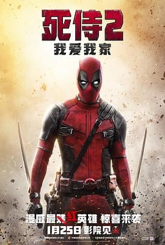

7.3
死侍2：我爱我家
Deadpool 2
2018
美国
评分 7.3
导演:
大卫·雷奇
演员:
瑞恩·雷诺兹 / 乔什·布洛林 / 朱利安·迪尼森 / 斯蒂芬·卡皮契奇 / 莎姬·贝兹 / T·J·米勒 / 莱斯利·格塞斯
类型:
动作,喜剧,科幻
剧情简介
韦德·威尔逊继续以毒舌和怪诞方式在黑道缝隙里行侠仗义，他与凡妮莎的生活正逐渐步入稳定，却在一场突如其来的袭击中被命运再度撕裂。痛失所爱让他跌入情绪深渊，连再生能力都无法修补那种失落。他被钢力士强行带回X战警基地，在任务中意外卷入少年变种人拉塞尔的暴走事件，也因此与孩子一同被关入寒冷的压制监狱。此时，来自未来的电索闯入，目的只有一个——杀掉拉塞尔，以阻止未来更惨烈的连锁灾难。面对这个行事冷酷的战士，韦德第一次陷入复杂抉择：是任由历史自然走向，还是为这个迷失少年做出选择？在越狱后，他组建了一支风格诡异又不太靠谱的小队，试图阻挡电索的追击。一路狂奔、乱战与嘴炮不断升级，韦德在荒唐行动中重新思考责任、牺牲与救赎的含义。拉塞尔在愤怒中步步滑向危险边缘，而电索冷硬的使命也被逐渐动摇。三股力量在爆破与黑色幽默交织的混乱中碰撞，推动他们直面各自的伤口，也重新寻找能让未来改写的可能。